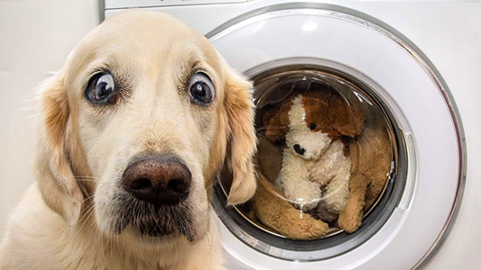
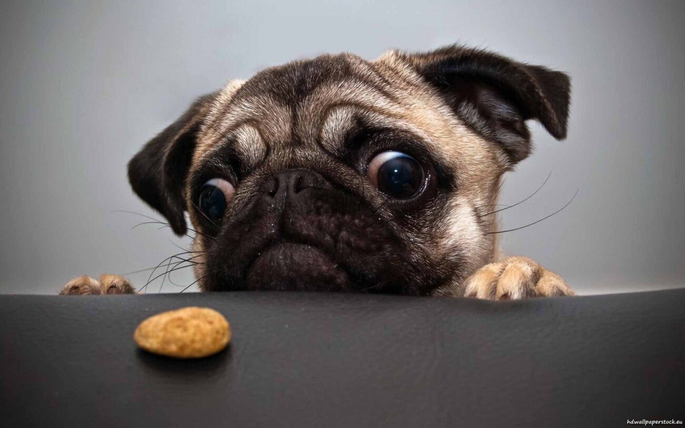

Large dogs are very gentle. Usually they do not bark a lot or easily get over excited. If the owners feel upset, they could get a LARGE hug from their dog!
You can teach your large dog to do many things, even wash your clothes.
...Well they may learn how to identify the clothes you want to wash first.
Once you have a large dog, you'll spend a lot more time and energy to take care of them. A small dog is much easier to breed, and could still be a funny doggo!
If the owners train them properly, small dogs won't bark a lot as well.